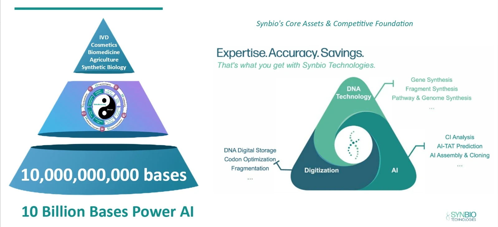

Synbio Technologies · AIDD
From 10 billion bases to AI-designed sequences.
Building the AI layer for gene synthesis, antibody discovery, mRNA, protein expression, and DNA storage — with more than 10 billion bases of real synthesis data behind it.
Read the project